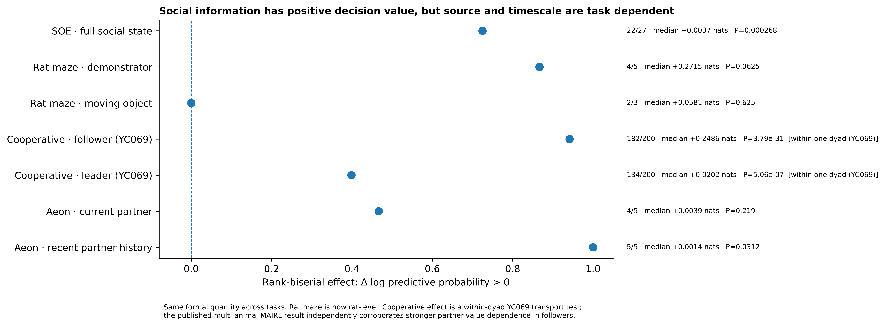
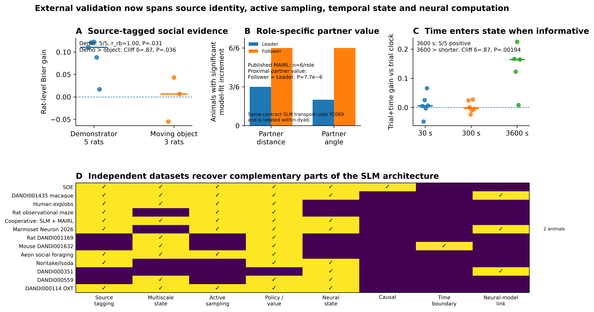

How does social observation become useful behavior?
Social observational eating is not simply “watch another mouse and then eat.” The observer selects when social information is worth sampling, assigns outcome-specific credit, and converts particular observed content into its own food-directed action. The Social Learning Model (SLM) is the primary and best biological predictor of this process: it predicts behavior, organizes the strongest neural readouts, survives causal tests, and generates the learned strategy in closed loop.
This page is intentionally comprehensive. It keeps strong controls, negative boundaries, artificial-agent results, cross-task/species tests, and source authority visible rather than compressing the project into a fixed number of figures.
SOE is learned
Learner SRI rises strongly across training; live social input, visual access and familiarity all matter.
Observation becomes efficient
Learning changes conversion of observation into feeding more than it changes gross observation rate.
Social value is adaptive
Social information is most useful when current self-state leaves room for external evidence to alter policy.
SLM predicts best biologically
Strong behavior plus the broadest coherent neural, causal, recovery and generative evidence.
Learning has multiple timescales
Immediate outcome-conditioned switching, minute-scale memory and a transient cross-day prior coexist.
Observed content drives Feed
Demonstrator feeding during the preceding Observe predicts a short-latency increase in native Feed hazard.
SLM is generatively sufficient
Mouse-derived SLM regenerates trajectory, local strategy and behavioral-state organization in closed loop.
VTA separates computations in time
Early policy → Middle APE → Post reward/update provides the strongest model adjudication.
VB and JAWS dissociate stages
Visual access controls useful information; VTA inhibition selectively disrupts Active social-reward credit.
The principle generalizes
Food-neophobia, fear, rat, macaque, human, Aeon and marmoset results constrain what is conserved.
SOE is acquired, visually guided, socially specific and familiarity weighted
The behavioral story starts before any model. Socially coordinated eating emerges with training, requires a live and visible partner, is stronger for familiar partners, and becomes increasingly efficient at converting observation into feeding rather than simply increasing the amount of looking.
Swipe the table horizontally for all columns →
| Discovery | Result | Interpretation | Status |
|---|---|---|---|
| Acquisition | strict learner SRI ≈1.07→4.58; older n=13 lineage .67±.34→2.82±.44, P<.001 | social coordination is learned, not baseline synchrony | recovered / cohort reconciliation pending |
| Live social input | simulated-demonstrator SRI ≈.499±.258, n=13, P<.001 vs live | apparatus and reward-delivery cues are insufficient | legacy manuscript control |
| Visual access | opaque barrier ≈69% reduction; current VB 3.67→1.08, 23/25 lower | successful social coordination requires visual information | historical + current verified |
| Familiarity | unfamiliar partner reduces SRI ≈44%, n=11, P<.05 | social evidence is weighted by partner identity/familiarity | historical recovered |
| Observation phenotype | observation rate rises with training; contra-observation does not show the same learning relation | learning refines selective social observation rather than generic sociality | historical recovered |
| Conversion | learner Observe→Feed ≈.431→.641; progress β≈+.126 vs nonlearner −.097; group P≈.00147 | successful learners become better at using sampled information | historical source pin pending |
Active orienting, not passive proximity
Demonstrator feeding/spout state is highly predictive, but observer-side head direction, facing, angular velocity, social turn and social gaze nearly match the all-feature classifier. Social gaze is the strongest single observer-side feature in the manuscript lineage.
Learning reweights an existing behavioral manifold
Successful active-reward bouts are preceded by distinct states. The global manifold remains broadly stable, while occupancy shifts toward socially informative motifs with training.
Conversion tracks learning better than observation amount
Earlier strict analysis: conversion progress correlates with ΔSRI (ρ≈.426, P=.0086), whereas observation-rate correlation with ΔSRI is near zero (ρ≈.037).
Familiarity × ambiguity is suggestive but not yet established
Social information has state-dependent decision value
The observer does not value all social evidence equally. Held-out predictive value depends on learning stage and on whether the observer’s own current state leaves room for external information to alter policy.
Median +0.00365 nats/decision; rrb=.725; P=.000268.
Median late−early = −0.00378 nats/decision; rrb=−.619; P=.00194.
Social information is most useful when the observer is farther from its own spout.

Multi-timescale memory recovered before the final SLM
The behavior contains fast rules, minute-scale memory and a transient cross-day state
SLM is not built around one arbitrary exponential memory. Independent pre-SLM analyses showed separable temporal structures: immediate outcome-sensitive stopping/re-entry, multi-event history over minutes, and a slower prior that is strongest early in the next session.
Active/Passive outcomes increase subsequent stopping relative to Unrewarded. Active−Unrewarded stopping reaches +11.6 pp at events 21–50; Passive reaches +17.6 pp.
Selected γ=.95–.97 corresponds to roughly 4.5–7.5 min and outperforms simple run length or elapsed time.
Chronological day order ranks 1/501 against day shuffles (P=.001996); a retained prior improves 29/40 animals (P=.0125) and fades by ~event 50.
Learning is expressed as better conversion and better credit assignment, not simply more observation
27 learners and 13 non-learners define the supplementary learning contrast. Primary predictive modeling remains learner-only.
Observe→Feed conversion progress is positive in learners and negative in non-learners; historical group P≈.00147.
The strongest learner-linked SLM result is neural APE coupling, not a binary learner/non-learner difference in model gain.
Simple scalar value, uncertainty and single eligibility kernels do not explain the full behavior
SLM is the best biological predictor of SOE
SLM is the project’s best predictive framework: it combines near-ceiling held-out behavior with the only coherent prediction of neural timing, causal perturbation, model recovery and generative organization. A black-box model can win a narrow behavioral leaderboard by a few thousandths of Brier, but it does not replace the SLM as the best predictor of the biological system. Flexible history networks remain explicit capacity ceilings.
Why “best predictor” means more than the lowest behavioral Brier
Swipe the evidence matrix horizontally →
| Model family | Held-out behavior | Early DA | Middle conditional | Post DA | JAWS | Recovery / generation |
|---|---|---|---|---|---|---|
| SLM family | SLM+CK .1654 / .8341 Full SLM .1708 / .8233 | policy rrb=.810, P=.0469 | APE ρ=.667, P=.0416 | RPE/update rrb=.867+ | Active belief rrb=−1.0 | strong component recovery + closed-loop generation |
| Current + CK | Brier .1664 / AUC .8322 | rrb=−.238, ns | reverse conditional rrb=−.333, ns | rrb=.467, ns | CK update rrb=+.164, ns | not established |
| Current + Q + CK | Brier .1667 / AUC .8315 | rrb=−.333, ns | reverse conditional rrb=−.333, ns | rrb=.467, ns | not tested | not established |
| TinyRNN | Brier .1680 / AUC .8286 | not tested | raw middle effect opposite / ns | rrb=.733, P=.0547 | not tested | capacity ceiling, not mechanistic recovery |
| History MLP | Brier .1637 / AUC .8374 | not tested | raw middle ≈0 | effect opposite sign | rrb≈0 | capacity ceiling |
| Q-all | Brier .2114 / AUC .7287 | ≈0 | does not survive APE conditioning | strong Post RPE | not primary | exact recovery 6/6; legacy generation |
This is the key distinction: a black-box history model can shave a few thousandths from behavioral Brier, but SLM is the model family with the strongest coherent evidence across prediction, temporal neural expression, causal perturbation, recovery and generation.
| Model | Brier ↓ | AUC ↑ | Role |
|---|---|---|---|
| Clock only | .244924 | .581658 | time heuristic |
| Previous choice | .228180 | .613424 | persistence baseline |
| Current linear | .194191 | .771429 | visible-state baseline |
| Current nonlinear | .185812 | .790933 | nonlinear state baseline |
| Full SLM | .170824 | .823320 | primary mechanistic predictor |
| SLM + choice persistence | .165411 | .834084 | best parsimonious SLM head |
| TinyRNN h3 | .168031 | .828605 | recurrent capacity control |
| Full-history MLP | .164749 | .835124 | black-box capacity ceiling |
| History MLP + formal-all | .163722 | .837365 | highest-capacity ceiling |
SLM beats RW, WSLS, Q-active, Q-all, asymmetric-Q, forgetting-Q, choice-kernel and Q+choice-kernel under the restricted baseline contract; rrb=1, P=1.49×10⁻⁸.
SLM+choice persistence recovers 96.9% of Current→full-history-MLP improvement and 92.4% of Current→best-history-model improvement.
Black-box models can match behavior, but they do not reproduce the full Early-policy / Middle-APE / Post-update VTA structure.
The best SLM behavioral head reaches the black-box ceiling without losing mechanism
SLM+choice persistence is better in 20/27 animals; rrb=.667, P=.00169.
SLM+choice persistence beats the recurrent capacity control; rrb=.862, P=1.59×10⁻⁵.
Statistically indistinguishable (rrb=−.079) despite the MLP’s higher capacity and weaker biological interpretability.

Actor-Critic, outcome-belief, Q-active, Q-all and adaptive-Q each recover 6/6; only one RW replicate is confused with adaptive-Q.
Feature-Q 20/20, policy 20/20 and state-value actor 19/20 under the 27-learner recursively generated conditional contract.
Strong alternative models are intentionally visible
What was observed — not merely that observation occurred — predicts feeding
The newest closure makes feeding a strict future action on a 1-s decision grid. This separates the social-information controller from the observer’s native feeding controller and identifies the content-specific bridge between them.
Observer-only pre-action state; both sessions held out together by animal, n=40.
Feed AUC improves with current social/dyadic state; rrb=.407, P=.0120.
Feed hazard within 3 s after observing demonstrator feeding versus observing no feeding; P=.0377.
Residual acute Feed hazard after frozen self + current-social prediction; P=.0445.

Why a generic “recent observation” explanation fails
The SLM does more than fit held-out behavior
A mouse-derived Artificial SLM is placed back into an empirical social-foraging world. Its Observe choices and social outcomes are generated in closed loop, allowing memory, belief, value and slow state to evolve recursively.
The fitted SLM regenerates broad learner trajectories without replaying held-out outcomes.
Ten-rollout posterior-predictive mean after removing held-out observer-state replay.
Autonomous Artificial SLM preserves substantial behavioral-state organization; mean JS=.0390.


Adding SLM coordinates improves Brier, NLL and AUC in every 5-fold × 3-seed × 2-reward run.
P=1.50×10⁻⁹ across animals; RPE ρ=.771 and |ΔActive belief| ρ=.734.
Auto-content beats auto-recency for Feed log loss (P=.0477) and Brier (P=.0346).
Current autonomous Feed boundary
VTA dopamine resolves the SLM computation in biological time
Behavior alone allows several high-capacity explanations. The strongest discriminator is temporal: distinct SLM components align with VTA dopamine at distinct phases of social observation and outcome.
Demonstrator state is represented in observer VTA
Observer DA is elevated when the demonstrator occupies the food zone and is lower outside it. Demonstrator feeding/spatial state, posture, proximity, velocity and turning all contribute; coupling is stronger in learners.
Active social gaze evokes dopamine
Observer-initiated social gaze evokes VTA DA, exceeds demonstrator-gaze responses, and precedes larger DA during active-reward eating.
Temporal SLM variables adjudicate mechanism
The newer held-block tests refine those descriptive effects into separable policy, APE and post-outcome update computations.
sampling policy
learner-linked action-policy error
reward prediction error
social belief update
credit carried forward

5/6 positive; one-sided P=.046875. Q-all and choice-kernel controls do not reproduce the effect.
Exact P=.04157; survives conditioning on CK, Q+CK or Q errors.
Actor-Critic RPE and belief-update variables explain post-outcome DA.
Aggregate Post06 dopamine is important but not uniquely SLM-specific
SOE is best explained by two coupled policies, not one scalar “social value”
The convergent result is a hierarchical controller. One policy decides when social information is worth sampling. A separate native feeding policy converts useful sampled content into food-directed action. Reward outcome updates reorganize future sampling through SLM belief/value states.
Removing visual social information strongly reduces SRI and Observe→Active efficacy without simply eliminating gross observation.
Current state, fast outcome history, belief/value and slow prior determine when observing is worth the opportunity cost.
What was sampled matters: observing demonstrator feeding predicts an acute excess Feed hazard beyond observer-state prediction.
Contingent VTA inhibition selectively weakens Active social-reward belief updating and successful conversion while sparing gross sampling.

Why the two-policy architecture matters
Recent Observe alone fails. Time since the last observation does not reliably predict Feed beyond current state.
Old SLM scalar state fails. Carrying one belief/Q scalar directly onto the Feed grid does not reliably improve Feed prediction.
Observed content succeeds. Demonstrator feeding at the preceding Observe improves conditional Feed calibration and produces the real ≤3 s hazard effect.
Autonomous sampling is partly sufficient. Artificial-SLM Observe choices sample useful content, but the generated content→Feed latency remains too slow.
Visual information access and dopamine-dependent reward credit are separable operations
Visual Block and JAWS both weaken SOE, but they intervene at different computational stages. Their shared behavioral endpoint is reduced successful Observe→Active conversion rather than simple loss of gross observation.


| Test | Primary effect | Gross observation | Computational interpretation |
|---|---|---|---|
| Visual Block | SRI ≈3.67→1.08; 23/25 lower | not systematically abolished | information-access / efficacy lesion |
| VB Observe→Active | .2830→.2137; P=.00427 | rate change P=.0863 | sampled information converts less effectively |
| JAWS contingent | SRI 1.880→.786; rrb=−.927 | preserved on average | reward-credit / teaching lesion |
| JAWS Observe→Active | .3202→.1933; P=.003906 | fraction Δ=+.044; P=.625 | successful conversion specifically decreases |
| JAWS Active belief | acute −1.000; continuous −.927; session −.964 | CK update P=.695 | Active social-reward belief is the most reproducible causal coordinate |

Artificial lesion correspondence
Clean Visual Block dopamine rebuild
SOE experience reorganizes later use of social information
Two source-rebuilt assays test whether prior social-learning experience transfers beyond the original feeding contingency. They are kept separate because the behavioral domains differ.

Food neophobia / SAFN
Latency: Social-trained mean 45.96 s versus 199.47 s in nonsocial-trained controls; Cliff δ=−.722; exact permutation P=.01948; permutation log-rank P=.03030.
First bout: 61.07 versus 8.81 s; δ=+.889; P=.00866. Total feeding duration is directional but not significant.
Observational fear
D1 shows stronger shock-locked reactivity, late-cue immobility and sustained shock-focused social monitoring after prior SOE training.
D0 locomotor baseline does not explain the phenotype, and the D1 amplification attenuates on D2. Exact-boundary cluster tests are corroborative rather than the inferential centerpiece.
The conserved principle is adaptive social-information use — not one universal architecture
Rat, macaque, human, naturalistic mouse and marmoset datasets test which pieces generalize. Units of inference remain dataset appropriate; external results support the principle without pretending every species uses identical latent variables.


Demonstrator social value rrb=.867; moving-object control does not show the same effect.
Recent partner-history increment positive in all independent experiments; P=.03125.
Multiscale state improves held-session prediction across the source-aware comparison.
TinyRNN is worse than explicit multiscale state in 9/10 rats; recurrent architecture is not the universal claim.

What the current results support — and what they do not yet prove
Keeping these boundaries visible prevents the large result space from turning into an overfit narrative. They are also the highest-value targets for the next round of analysis.
SLM as primary biological predictor
Strong held-animal behavior, best mechanistic hierarchy, VTA temporal support, causal latent support, model recovery and generative sufficiency.
Observed-content conversion
Demonstrator feeding at the preceding Observe predicts a short-latency excess Feed hazard beyond current-state prediction.
Full autonomous social foraging
The generated agent samples useful content, but the real ≤3 s Observe→Feed timing is not yet reproduced.
Black-box capacity
History MLP can achieve slightly lower Brier than Full SLM. It is retained as a capacity ceiling; prediction alone does not determine mechanism.
Aggregate DA
Post06 DA is compatible with several reward-update models. Temporal decomposition, not aggregate DA, supplies model specificity.
Association ≠ causal trigger
The dem-feed→Feed hazard bridge survives held-out state control but does not yet prove that observed demonstrator feeding causally triggers observer feeding.
Open the exact analysis authority behind the page
The visual page is a navigation layer. Numeric authority remains in the versioned checkpoint, analysis master, focused mechanistic notes and downloadable CSV tables below.
Latest project-wide state and PASS / PROVISIONAL / FAIL boundaries.
Comprehensive analysis/results authority.
Strict future Feed contract and observed-content bridge.
Generated sampling schedule tested against native Feed conversion.
Generative sufficiency, recurrent convergence and biological grounding.
Visual Block and JAWS computational lesions.
Canonical held-animal behavioral model table.
Audited behavior, Early/Middle/Post DA, JAWS, recovery and generation registry.
35/36 six-family recovery and 59/60 focused recovery authority.
Recovered early phenotype, social gaze, motifs, learning and historical controls.
Frozen Early/Middle/Post model evidence.
Project-wide bounded effects and inferential units.
Current page build: 2026-10-04. Intended for internal scientific review and iterative mobile inspection.